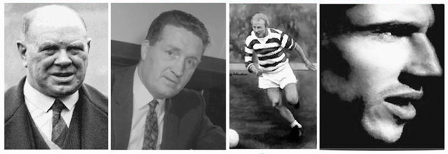

<div class="content">

<div class="container">
<div class="row">

<div class="col-sm-12">
<div class="jumbotron home-jumbo">
<div class="img-center"> 

</div>     
<p>The club shall be called Grampian Emerald Celtic Supporters Club and will be registered with Celtic Football Club.</p>
<p>TThe aim of the club is to provide transport for Celtic supporters in the Grampian area and to promote the name of Celtic Football Club, in a good and proper manner.</p>
<p>To provide an organisation for all Celtic Supporters to foster and develop good citizenship among members and generally do such things as may from time necessary to elevate and watch over the interests of the club.</p> 
<p>To promote social activities for Celtic minded people in the Grampian area.</p>
<p>Members shall pay an annual fee as set at an annual AGM (£10 for Season 2013-14).</p> 
<p>The formation of a committee as deemed necessary by the members shall be formed at the AGM, this committee shall be responsible to the members and should at all times have the good of the club at heart in forming their decisions.</p>   
<p>The financial year shall end on the 31st of May.</p>    
    
</div>
</div>      
</div>    
</div>
    
 

  

 
</div>    